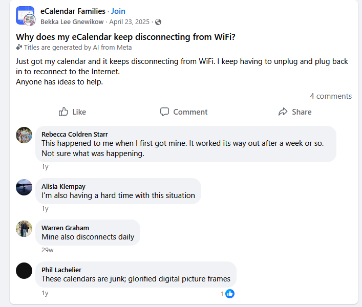
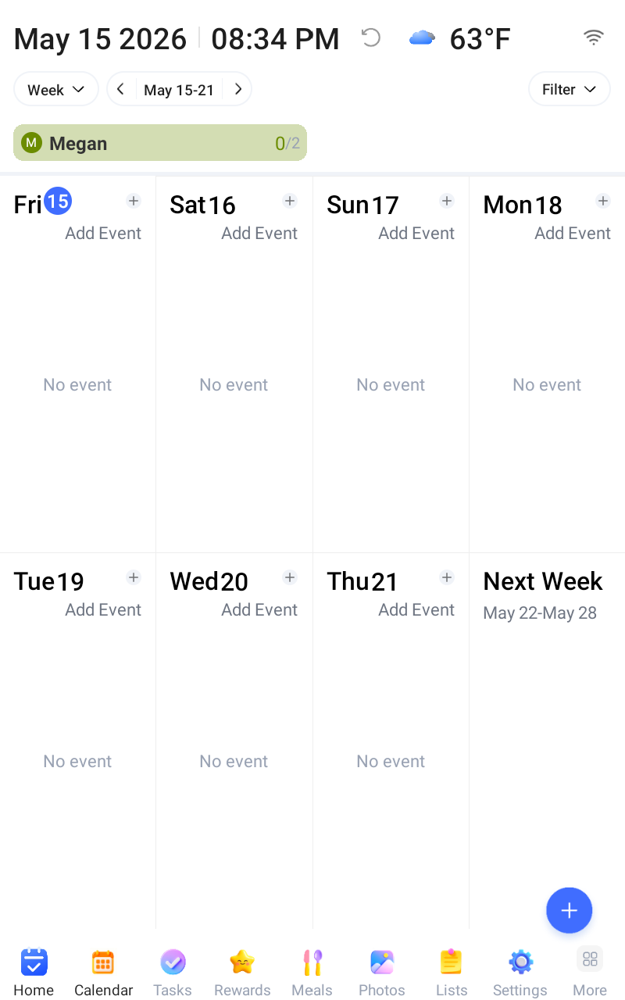
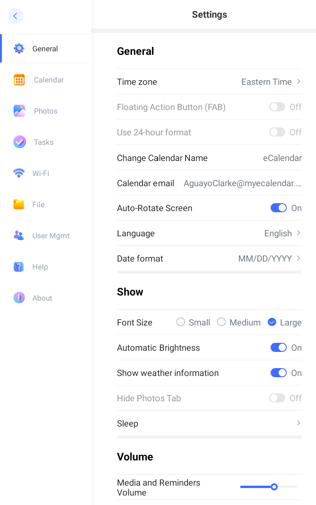
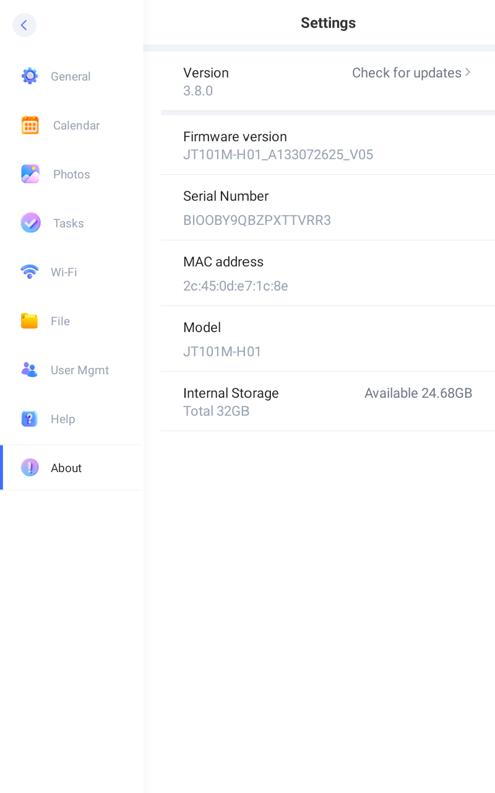
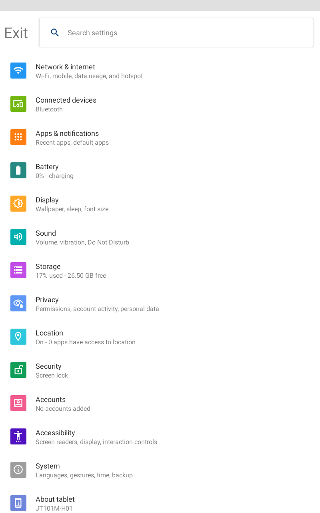
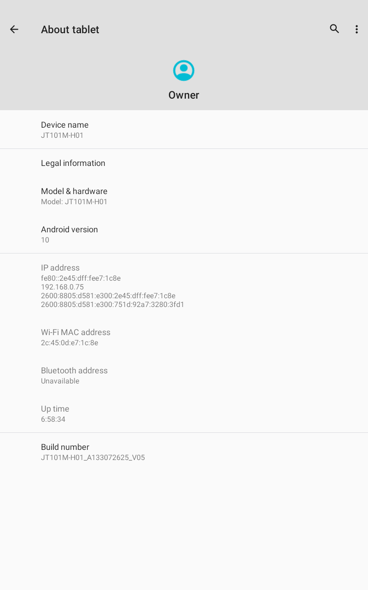
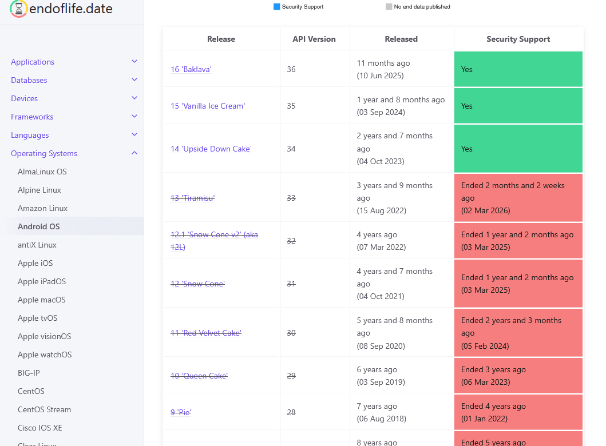
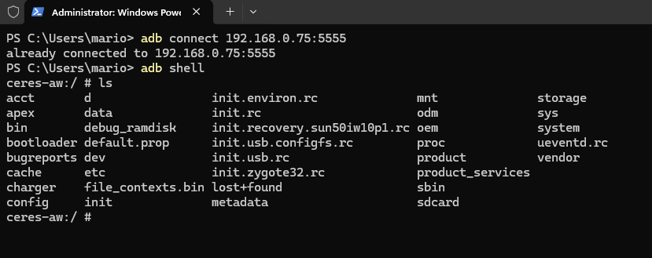
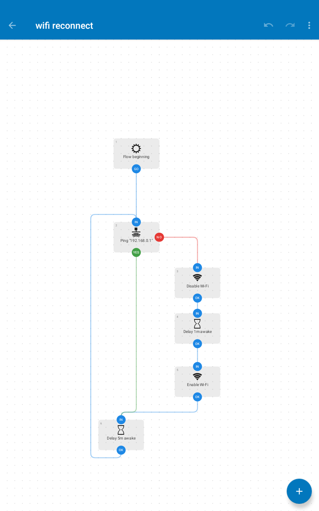
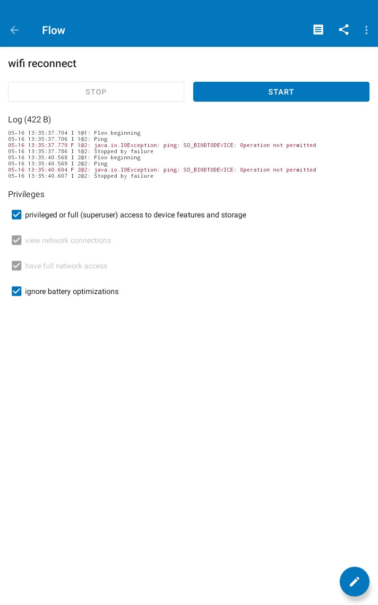

AnyuseNouse eCalendar
Making an eCalendar stay connected to WiFi — you know, the bare minimum.
Nouse eCalendar
I was recently gifted an Anyuse eCalendar — a 16-inch touchscreen device designed to serve as a household
command center.
On paper, it covers a lot of ground. It can sync with Google and iCloud calendars, help manage family chores,
track meals, assign task rewards to kids, and double as a digital photo frame when idle.
It's meant to be mounted on a wall or propped on a desk, always on, always connected, and always useful.

The key word there is connected. Nearly every feature on this device — calendar sync, chore
assignments, meal planning — depends on an active WiFi connection. Without it, you're left with a large,
expensive screen showing whatever was last cached locally.
And that's exactly the problem. WiFi drops daily, without warning, and doesn't recover on its own. The device
isn't being used in any unusual way — it's plugged in, stationary, and within range of the router. It
just stops connecting. I initially assumed it was a fluke on my end, but a bit of Googling quickly showed I
wasn't alone.
Research
What's in the box?
Here's the user manual for the device. However, there's nothing helpful for what I'm looking for. My assumption is that this is an Android device, but I'm unsure of what version. But there's hope! I found a post describing how to access a hidden System Settings screen.System Settings
-
Tap Settings in the bottom navigation bar.

Settings button in the bottom navigation bar. 
Settings menu overview. -
Tap About in the left-hand navigation menu.

About option in the Settings navigation menu. -
Tap Model 20 times. The screen will change to what looks like the typical Android System Settings.

Model field in the About screen. -
Tap About Tablet.

System Settings screen unlocked after tapping Model 20 times.
Hell yeah! Android 10 baby! Oh... it's end of life 🙃.

How can I get in?
So — Android 10, WiFi-connected. Now how do I get in? Luckily, I've worked with wireless Android devices in the past and have experience with a utility called ADB (Android Debugging Bridge).Let's attempt to connect:

The Workaround
Now that we have shell access, the fix is straightforward. Since we can't permanently patch the firmware,
the next best thing is to automate a workaround. The plan: sideload Tasker
— a powerful Android automation app — directly onto the device via ADB, no Play Store required.
 
With Tasker installed, a simple profile can be created to toggle WiFi off and back on at a set interval,
effectively kicking the connection back to life before the user ever notices it dropped.
adb install tasker.apk will remotely install the application.
adb shell am start "net.dinglisch.android.taskerm" will launch the application.
Update 1:
Sadly, I've had to abandon Tasker due to needing a license in order to use it more than the trial period of 7
days.
I'm going to uninstall and try Automate instead.
Update 2:
After uninstalling Tasker, I sideloaded Automate the same way.
adb shell monkey -p com.llamalab.automate -c android.intent.category.LAUNCHER 1 launches the
application.
I built a simple flow to toggle WiFi off and back on at a set interval — exactly what I had in mind from
the start.
Turns out, toggling WiFi state requires root access. Not ideal.
Outcome
I'm not happy with this outcome, but I'll have to take the "L" for now. I guess I have a digital photo frame.
Notes
To capture screenshots directly from the device over ADB, run these two commands in sequence:
adb shell screencap -p /sdcard/screen.pngcaptures the current screen and saves it to the device's SD card.adb pull /sdcard/screen.pngthen pulls that file down to your local machine.adb install file.apkto push and install APK file.